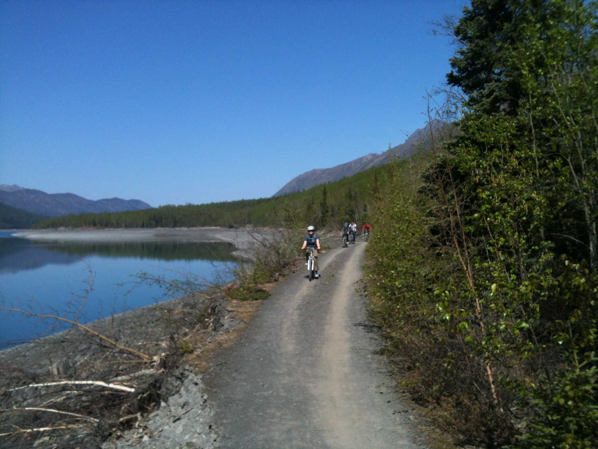

Cycling today?
Click the Create Test in the bottom toolbar to create a new saftey check, doing so will list your tests in the Past Tests section which is also in the bottom toolbar, you will find you will have a more relaxing and motivated bike ride knowing your all set and had a quick check before taking off. you can think of this as just like checking your mirrors before pulling off in your car, one check and you know your all set!
Recommended Trails
Quercus Trail
This fantastic blue grade route is 7.5km long with a shorter 3.5 km option. It is a gem waiting to be discovered, expect flowing single track with gentle berms , rolling jumps, wide gradual climbs with technical features for the adventurous riders.
Goosey Foot Tarn Trail
The shortest of our waymarked cycle trails, but there are still small hills involved, so be warned! The trail takes you past Goosey Foot and Juniper Tarns, two of our twenty or so man-made tarns. Park at Moor Top car park and follow the blue waymarkers. This short family cycle ride can be extended by linking with the Hawkshead Moor route.

Lakeside Way Cycle Trail
The Lakeside Way multi-user path offers visitors to Kielder Water & Forest Park a truly unique experience giving access to the most scenic parts of the lake shore and the opportunity to get up close to some of Kielder’s abundant wildlife. The 26-mile path encircles Kielder Water and is suitable for walkers, cyclists, horse riders, mobility scooters and wheelchair users.
Any Questions?
Click the About Us in the bottom toolbar and hopefully we answer most of your questions, however if not, feel free to contact us at 0191-232-2222 and we will get back to you!